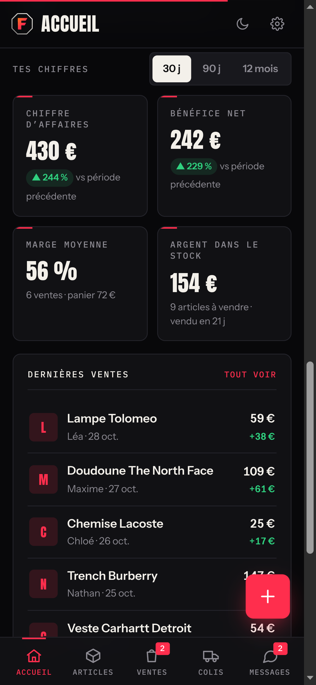
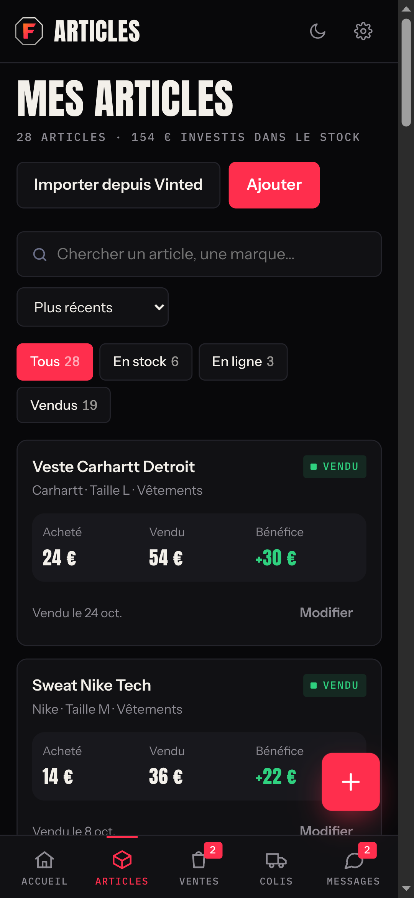
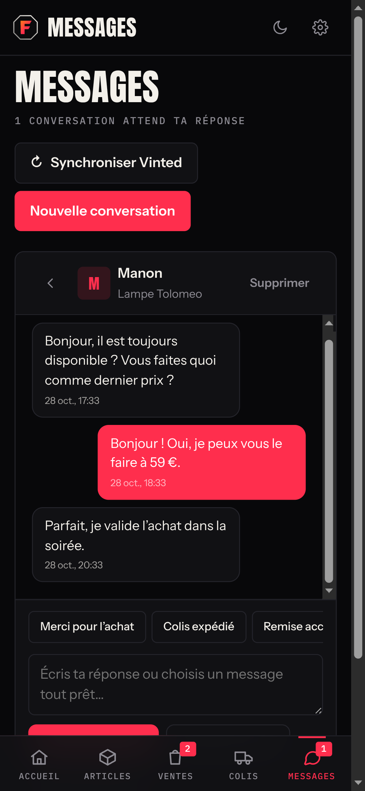
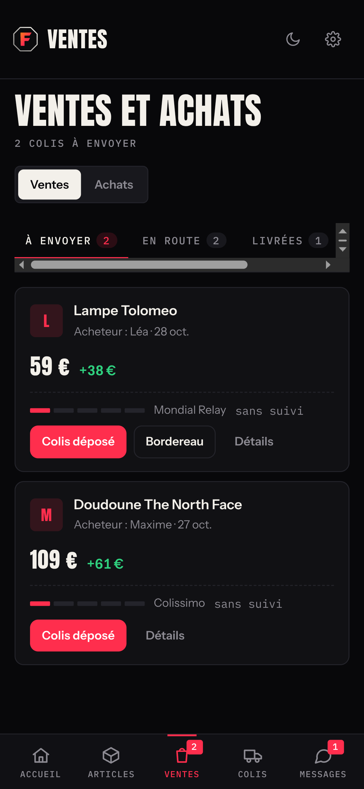
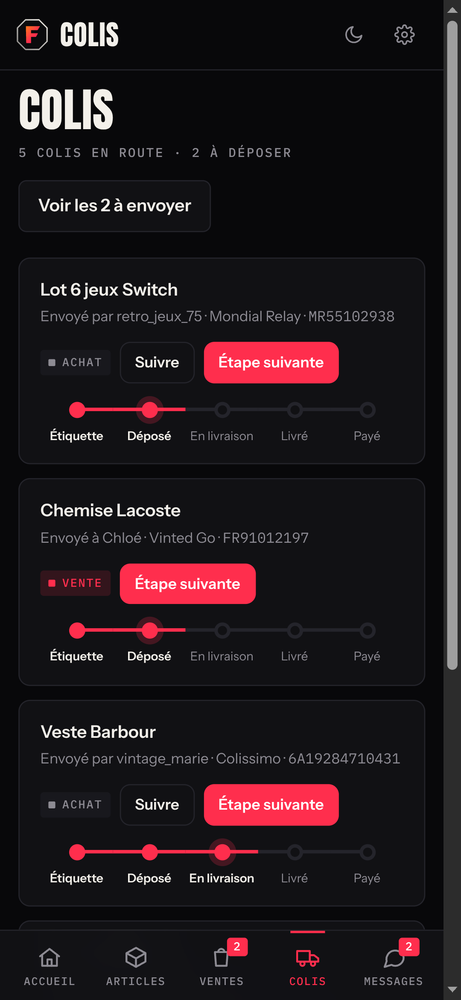

Un seul espace pour tout gérer.accueil · articles · ventes · colis · messages
Ton stock, rangé.prix d’achat, statut et bénéfice de chaque article
Publie sur Vinted en 1 clic.avec l’extension gratuite Fripe Connect
Réponds à tes acheteurs.tes conversations Vinted, dans Fripe
Ton bordereau, en 1 clic.depuis la vente ou la conversation
Chaque colis, jusqu’au paiement.





✓Annonce pré-rempliePhotos, titre, prix : tu vérifies et tu publies.
✓Message envoyé sur VintedDirectement à l’acheteur.
✓Bordereau ouvertImprime-le ou montre-le au point relais.
Fripe
Ton Vinted, enfin organisé.
stock · annonces · messages · bordereaux · colis
Essaie gratuitementfripe-iota.vercel.app
Gratuit jusqu’à 20 articles · sans carte bancaire